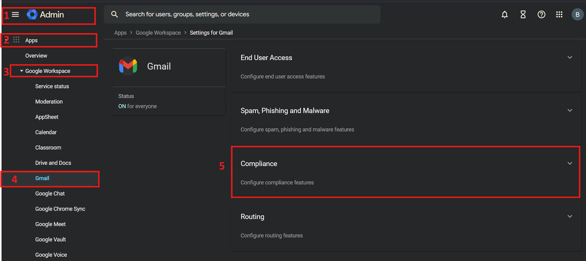
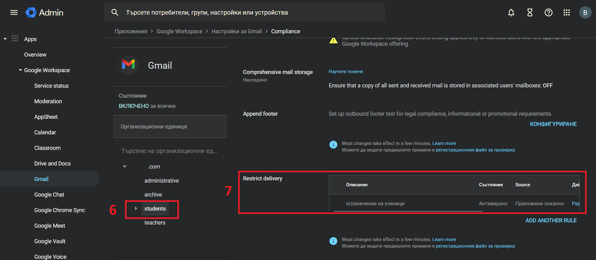
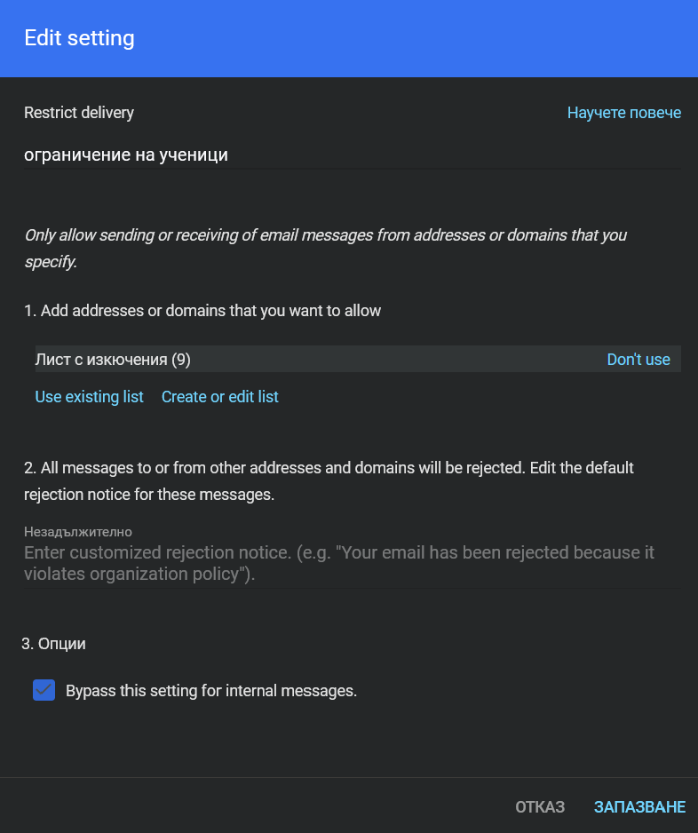

Настройки на Google Workspace
1. Ограничаване на изпращане/получаване на имейли към/от електронна поща, извън домейна на училището.
Вписване с администраторски акаунт в Google Workspace - https://admin.google.com
- Apps
- Google Workspace
- Gmail -> Compliance -> избираме Organisation Unit (организационна единица) ->
Restrict Delivery -> Add Rule:
- Име на правилото
Only allow sending or receiving of email messages from addresses or domains that you specify.
1. Добавяне на изключения - Add addresses or domains that you want to allow;
2. Добавяне на известие за ограничение - default rejection notice for these messages;
3. Позволяване на имейли от домейна на училището - [v] Bypass this setting for internal messages.
- Save
- Готово, нашето ограничение е добавено!
Стъпка по стъпка:



Справки за вписване и изпращане на имейл
1. Вписване с администраторски акаунт
2. Откриване профила на ученик/учител
3. Investigate -> Audit logs related to this user -> 2-ра страница -> Gmail log events ->
Add Filter: From (Envelope): Contains: потребителски профил
Add Filter: IP address: Is: за търсене на активност по IP адрес
View logs -> Export all
Забраняване на Google Workspace акаунти да използват външни платформи
1. Вписване с администраторски акаунт
2. Security -> Access and data control -> API controls -> MANAGE APP ACCESS
Accessed apps -> View list
3. Add Filter -> App name -> Име на приложението -> Change access -> Избиране на група/всички -> Next ->
[v] Blocked -> Next -> [ ] Notify users -> CHANGE ACCESS
Проверка на вписвания към външни платформи чрез Google профил
1. Вписване с администраторски акаунт
2. Reporting -> Audit and investigation -> OAuth log events
Add filter -> Application name -> име на прлатформата/приложението -> Search